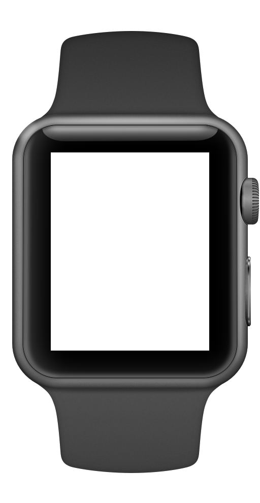

Life Brain — one will,
four agents, thirty days.
Lena's month inside a personal-scale Life Brain. Declared intents, protected rituals, and the dial of trust that grew with her behavior.
Meet the Rhythms
Lives in Tokyo. Daily commute, calorie aware, shops on Saturday. Wants the Brain to handle lunch options and track budget burn. Collaborative style — 60% delegation.
Lena's partner. Rhythms are irregular, values the raw feeling of choice. Wants data raw, notices silent agents. Driver style — 15% delegation.
On the first morning, Lena declared three intents.
Goals say what to reach. Rituals say where AI must stay silent. Both declared at the same level.
What Lena actually taps on Day 1: three goals (Health, Finance, Location), two protected rituals, four agents to spin up. One commitment for the next thirty days.

Life Brain — personal-scale personal OS.
Lena's intent flows down into the center; four specialist agents observe the world and report back. The two-way flow is what makes the Brain learn.
"Friday Frappuccino — I pick this one."
Not a reactive Override. A pre-declared zone where AI is forbidden to step in.
When the place × time × frequency conditions match, every agent goes silent. Only Lena's hand is on the menu. The framework doesn't take will away — it supports it.

Four micro-scenes. Twelve hours.
See the agents adapt across different form factors, gestures, and states.
Moment Composer fuses 4 signals on wrist.

Drive-Me gesture pulsates to hand over lunch.
Protected Ritual silences all agents.
Driver Mode triggered by reservation.
Memory and Retrieval
Day 18 · Forgotten Intent. Walking home, the watch vibrates with a 3-month-old saved Instagram coffee shop. Context Grammar uses place × time × health × finance gates to retrieve only what matters, preventing information flood.
Day 21 · Mid-Month Review. The Dial earns its evolution. Agents suggest Dials changes based on zero error history. Lena must explicitly approve them — AI never auto-promotes.
Akari (52 · Diabetes Type-2 since 2024)
A diagnosis isn't a personality. The same grammar that supports Lena's lunch supports Akari's pharmacy refills.
Sunday dinner with grandkids is a Protected Ritual (D2 Disclosure Lock). The Brain records glucose values silently. No warnings. No advice. Just the fact, and the door back to Monday: "3 hr 14 min · logged."
Two users. Opposite rhythms. One grammar.
The Dial controls the relationship. Lena is a collaborative user, delegating 64% of choices. Haruki is a driver, keeping 88% of choices manual. Both are supported by the same grammar structure, demonstrating its universality across opposite mental models.
Peripheral HUD Projection
Looking into the future of glanceable UI forms.
A personal OS projection directly in the peripheral field. Suppressed when eye contact is detected. Fits the same Context Grammar rules — whisper notifications in active gaze.
Project Outcomes
Context Grammar is not a design that takes will away.
It's a design that supports it.
The moment to let go. The moment to drive.
Lena's thirty days were built from both.